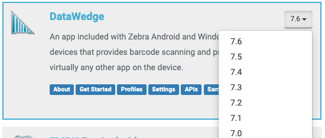

Q: アプリに DataWedge または EMDK を使用する必要がありますか?
A: バーコード スキャンを必要とするアプリの場合、特にアプリ開発のアプローチが簡単なため、Zebra では DataWedge を強くお勧めします。DataWedge は、既存のアプリにデータ キャプチャ機能を迅速かつ簡単に追加できるようにするものであり、すべての Zebra デバイスにプリインストールされています。DataWedge は、コーディングを必要とせずに UI を構成することによって使用できます。また、Android のインテントを介してすべての関数をプログラムで制御することもできます。詳細については、DataWedge 対 EMDK の機能比較チャートおよび「ご使用の前に」ガイドを参照してください。
Q: コーディングせずにアプリでデータをキャプチャするには、DataWedge をどのように構成すればよいですか?
A: DataWedge は、UI を介して構成すれば、データのキャプチャ、特定の要件に基づくデータの処理、およびプロファイルを使用して関連付けられたアプリまたはアクティビティへのデータ出力が可能になります。データをスキャンして取得するために DataWedge が呼び出されると、プロファイルによりアプリが形式に関連付けられるか、指定されたデータが追加された後、そのデータが、関連付けられているフォアグラウンド アプリに渡されます。手順に従って、新しいプロファイルを作成します。詳細については、プロファイルのセクションおよび「ご使用の前に」ガイドを参照してください。
Q: アプリにスキャンをどのように組み込めばよいですか?
A: スキャナには、次の 2 つのインテント ベースのインタフェースがあります。
- スキャンしたデータを取得するためにAndroid の汎用インテントを使用する - これにより、DataWedge API を使用してデータをキャプチャする必要がなくなります。スキャンしたバーコード データをアプリで受信する方法については、チュートリアルを参照してください。
- スキャナを制御するために DataWedge API を使用する - Android インテントを使用して、DataWedge の構成設定と操作をプログラムで制御、変更、照会する機能を提供します。これにより、新規または既存の Android アプリを簡単に変更して、基盤となるハードウェアに関係なく Zebra デバイスを使用してデータを取得できるようになります。「ご使用の前に」ガイドおよびサンプル デモ アプリを参照してください。
DataWedge を使用してスキャナをインタフェースする方法に関する当社のブログ記事を参照してください。
Q: スキャンが DWDemo では動作しますが、自分のアプリでは動作しません。なぜでしょうか?
A: デフォルトでは DWDemo プロファイルが組み込まれており、スキャンしたデータをインテントを介して DWDemo アプリに送信します。スキャンしたデータを受信するには、アプリのプロファイルを構成する必要があります。プロファイルが適切な入力 (バーコード入力など) と出力 (インテント出力、キーストローク出力など) で構成されていることを確認してください。これを行う方法については、「プロファイルの管理」を参照してください。
Q: バーコードをスキャンできますが、アプリに送信されません。なぜでしょうか?
A: プロファイルがアプリに関連付けられていないか、プロファイルの入出力が正しく構成されていない可能性があります。DataWedge では、デフォルト プロファイル (Profile0) を使用してスキャンを実行しており、これによりスキャン ビームが照射されます。ただし、正しく構成されていない場合、キャプチャしたデータの出力方法がわかりません。プロファイルを作成し、適切な構成でそれをアプリに関連付けるか、適切な入出力でデフォルト プロファイル (Profile0) を構成して、スキャンされたデータをキャプチャします。
Q: DataWedge アプリで一時的にスキャンを中断するには、どうしたらよいですか?
A: スキャナ入力プラグインを使用して、アプリのバーコード スキャナを一時的に無効にするには、次の 2 つの方法があります。
- 有効化/無効化- いつでも呼び出せます
- サスペンド/再開 - 非常に高速ですが、スキャナが
SCANNINGまたはWAITING状態のときにのみ呼び出せます。スキャナの状態は、スキャナ ステータスの取得または通知の登録によって取得できます。
詳細およびサンプルコードについては、DataWedge を使用してアプリでスキャンをすばやくサスペンドする方法に関する当社のブログ記事を参照してください。
Q: DataWedge の設定と構成を一括展開するにはどうすればよいですか?
A: DataWedge をセットアップし、デバイスで要求どおりに構成したら、設定をファイルに保存し、手動またはモバイル デバイス管理 (MDM) システムを使用して他のデバイスに配布できます。エクスポートできるファイルは 2 つあります。
- 構成 – すべてのプロファイルおよび関連する構成をはじめとする DataWedge 設定が含まれます。その設定は、「atawbache.db」に保存されます。
- プロファイル – 取得したデータのキャプチャ、処理、出力の方法など、個々のプロファイル設定が含まれます。その設定は、「dwprofile_[profileName].db」に保存されます。[profileName] は、プロファイルの名前です。詳細については、「一括展開」を参照してください。
Q: デバイスの特定の DataWedge バージョンでサポートされている機能を確認するにはどうすればよいですか?
A: メインの [TechDocs] ページから [DataWedge] タイルのバージョン セレクタ ドロップダウンでバージョンを選択すると、関連する DataWedge ページに移動し、そのバージョンに固有の情報が表示されます。 "DataWedge バージョン セレクタ"
選択したバージョンが URL にも反映されます。デバイスで実行されている DataWedge のバージョンを確認するには、「どのバージョンがインストールされていますか?」を参照してください。
Q: 一部の機能が期待どおりに動作しません。なぜでしょうか?
機能マトリックスをチェックして、適切なコンポーネント バージョンが使用されていることを確認します。
Q: DataWedge は NFC をサポートしていますか?
A: いいえ。NFC は、セキュア NFC または Android の NFC API を搭載した EMDK for Android でサポートされています。
Q: エミュレータでスキャン アプリをテストできますか?
A: 実際のハードウェアでアプリをテストすることをお勧めします。これが不可能な場合は、adb シェル コマンドを使用して、バーコードのスキャン時にデバイスに送信される、DataWedge によるキャプチャ データをシミュレートできます。詳細については、関連するブログ記事を参照してください。
Q: DataWedge API は、データ キャプチャをリアルタイムで制御できますか?
A: はい。DataWedge API は、スキャナ、磁気ストライプ リーダー、RFID、シリアル/USB ポート、SimulScan、または音声を介して、データ キャプチャを動的に制御できます。
関連ガイド: